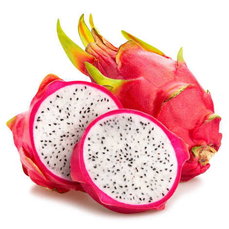

A pitaya or pitahaya is the fruit of several different cactus species indigenous to the Americas.
These fruits are commonly known in English as "dragon fruit", a name used since 1963, apparently resulting from the leather-like skin and prominent scaly spikes on the fruit exterior.[3] The names pitahaya and pitaya derive from Mexico, and pitaya roja in Central America and northern South America, possibly relating to pitahaya for names of tall cacti species with flowering fruit.[2][4] The fruit may also be known as a strawberry pear.
